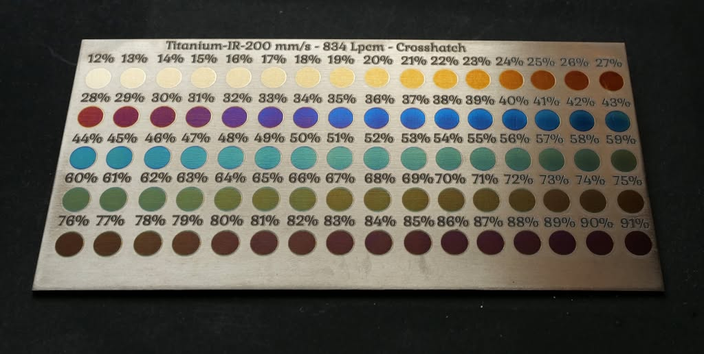

One physical dial — the thickness of a transparent oxide film — produces every colour titanium can show, in a fixed order, whether you get there with a laser or a bath of electrolyte. This page walks that order stop by stop, then spends its last section on the one colour that resists showing up cleanly: green.
Recap
Full derivation lives on Titanium Colour Physics — the short version, so this page stands on its own:
The Sequence
Same idealised model as the simulator's colour stops — smooth, uncorroded oxide, growing from nothing. Scroll sideways; the story is the trend, not any single swatch.
Reality Check
The idealised strip above assumes a perfectly smooth, uniform film all the way out. Two real photographed chip cards — different laser settings, different labs, same titanium — show where that assumption actually holds and where it breaks down.
Matches the idealised sequence cleanly from ~13–41% power (gold through sage), then desaturates into greys and mauves instead of continuing into more saturated colour. See the full Reference Charts.
Wider power range (12–91%), same eventual pattern: clean progression through blue and teal, then a drab, low-saturation stretch instead of a real green — the subject of the section below. Full data: chip-card-200mms-834lpcm-crosshatch.json.

The Exception
Every other colour on the strip above shows up bold when the film is smooth and coherent. Green is different — and both real cards independently show the same failure, from opposite directions.
This is the same rainbow a prism splits sunlight into — titanium's interference colours just walk along it as oxide thickness increases. Green sits almost exactly in the middle, with blue and cyan on its short-wavelength side (thinner oxide — Blue and Teal, earlier in the palette strip above) and yellow and orange on its long-wavelength side (thicker oxide — Yellow-Green and 2nd-order Gold, later in the strip). That's exactly what "blue side" and "yellow side" mean in the two approaches below: the two directions you can dial oxide thickness from to try to land on green — a little more than Teal, or a little less than Yellow-Green.
The physics — still just a phase shift, nothing more exotic. The mechanism is exactly what it sounds like: two reflections — one off the top of the oxide, one off the oxide/metal boundary underneath — travel different path lengths. That path difference creates a wavelength-dependent phase difference, phase(λ) = 4πnd/λ. Some wavelengths arrive back in phase and reinforce; others arrive out of phase and cancel. No separate filter, no extra component — just interference from that one phase shift, the same as any other thin film.
"Highpass," "lowpass," and "bandpass" below describe the shape of that interference plotted across the narrow 400–700nm window we can actually see — not a different mechanism. Because phase(λ) depends on 1/λ, thicker oxide sweeps more of one full interference cycle across that window:
Same phase-shift interference the whole way through. What changes with thickness is only how much of one cosine cycle happens to land inside the slice of spectrum we can perceive.
There's a second, deeper reason, and it has nothing to do with roughness: even a perfectly smooth film's green notch would look less saturated than blue's or red's notch of the same physical depth. The eye's colour receptors each integrate light over a fairly wide band of wavelengths — roughly 100nm or more. A highpass/lowpass edge (blue, red, gold) still leaves one whole side of the spectrum strong, so it comfortably out-votes whatever leaks through from the suppressed side. A bandpass notch (green) is narrow enough that the receptor bands on either side of it always catch some of the light the notch didn't suppress, diluting it. Same modulation depth, less perceived saturation, before any real-world imperfection gets involved at all.
Checked directly (peak-to-trough amplitude before vs. after blur): the order 2 example below (a broad ~160nm-wide hump) only loses about a quarter of its amplitude — barely visible. The order 6 example in the "tighter bands" box further down loses over 80%, because a genuinely narrow feature has far less width for a 50nm window to average over. That's the real, verifiable place to watch this toggle work — not "green specifically," but narrow specifically, which is a related but more precise claim: green's first attempt (order 2) happens to still be broad, so it survives blur about as well as blue or red do at this thickness. It's the higher orders — and, in the real chip-card data above, the roughened real oxide — where this effect actually bites.
All four diagrams above — the three examples and the slider — are driven by the exact same formula and the exact same colour-derivation function (a simplified wavelength-weighted sum, not the illustrative named palette used elsewhere on this page). Drag the slider to 100nm, 124nm, or 152nm and its curve will exactly match the corresponding example above — same numbers, same code path, by construction.
phase(λ) = 4πnd/λ gives a cycle width of roughly Δλ ≈ λ² / (2·nd) — inversely proportional to thickness. Order 2 fits exactly one cycle-width's worth of turning point into the 300nm-wide visible window, so that feature can be relatively broad. Order 6 has to fit several complete cycles into that same 300nm span, so each individual peak and dip has to be proportionally narrower to make room. Higher order doesn't just mean "harder to hit" (the maths box above) — it means the target itself keeps shrinking the further out you go, which is also why this page's Reference Charts and the anodizing "2nd-Order Gold, Orange, Pink/Magenta" sequence read as progressively less saturated than the first-order run through Gold-Purple-Blue. Toggle human perception above and watch this specific row — order 2's broad hump barely moves, but order 6's already-narrow peaks nearly flatten, because a fixed-width blur only erases detail finer than itself.
| Power | Colour (sampled) | Hue | Saturation | What's happening |
|---|---|---|---|---|
| 37% | Blue | 210° | 66% | Peak saturation of the whole card — smooth, coherent film |
| 50% | Teal | 175° | 27% | Closest approach from the blue side — already fading |
| 56% | Dark teal | 160° | 23% | Still short of true green (120°) — and dimming |
| 57–59% | Muted brown | ~32° | ~20% | Hue collapses straight through the green band without stopping |
| 60% | Drab olive | 98° | 18% | Closest approach from the yellow side — barely saturated |
| 66% | Olive-brown | 61° | 31% | Sliding on into brown for the rest of the card |
Both approaches get within striking distance of green, and both lose saturation right at that point instead of gaining it. That's not a coincidence — it's the same thickness range where this laser-grown oxide starts to roughen from accumulated heat, the "Desaturating" regime already documented on the main Titanium Colour Physics page. The narrow, fragile reflectance notch a real green needs requires a still-smooth, still-coherent film, and this oxide crosses into roughening right where green would need it to be.
Worth being precise here, because it's actually both, and they're doing different jobs:
Same diagnostic as the "point-light reflection" row on Protecting Titanium's Smoothing vs. Thickening table — run it before and after any technique below.
An Open Experiment
The techniques below all react to roughness after the fact. There's a theoretical case that some of it is avoidable in the first place, by how line spacing (LPCM) relates to the physical beam width — the same relationship LPCM & DPI: The Density Factor covers generally, applied specifically to scattering rather than thermal dose.
Three regimes, each its own theory of scattering — labelled deliberately as theories, not conclusions, because every one is cheap to actually go test on scrap:
A focused spot's intensity tapers off gradually, not sharply. Wider spacing means the gaps between lines are only ever reached by that low-intensity tail — never a full dose, never zero — leaving a graded smear of half-formed oxide instead of one clean thickness.
Lines just touch, edge to edge, with minimal double-exposure. Two adjacent Gaussian profiles still don't sum to a perfectly flat total, so a periodic seam remains — but the finest, most regular version this geometry can produce.
Every point gets hit by more than one pass, blending adjacent lines into something more continuous — genuinely reducing the macro periodic signature. The risk: more overlap usually means more total heat, and heat is what roughens the microstructure. But dose and peak temperature aren't the same lever: overscanning at correspondingly lower power could trade a few hot, sharp-edged passes for many gentler, overlapping ones, at similar or lower total dose — replacing each line's abrupt hot/cold boundary with a shallow, gradual ramp. Neither real card here tuned power down to compensate for its high LPCM, so this trade-off is untested, not ruled out.
None of this has been tested against real saturation measurements — it's a theoretical reading of the same LPCM-vs-spot-size relationship the density page already establishes, aimed at scattering instead of thermal dose.
If roughness-driven scattering is what's costing green (and, to a lesser extent, every other colour) its saturation, the natural next question is whether you can fix that after the fact — by polishing — without undoing the thing you're trying to preserve. This section is explicitly untested speculation, reasoning from the same physics above and the theories on Protecting Titanium's Interference Colours, not a verified result.
Ways scattering could drop without true smoothing:
Practically: the point-light test above tells you whether scattering dropped. It can't tell you which of these five mechanisms did it — that needs the real microscopy and spectrometer measurements in Protecting Titanium's experimental protocol.
Plausibly, yes. If saturation loss is mostly scattered light diluting the real interference signal, then anything that restores specular reflection — without changing oxide thickness — should restore saturation, the same way a thin oil temporarily restored brilliance on IPA-dulled titanium (Theory B on the Protecting Titanium page: index-matching / smoothing, not a hue change). Green should show the largest relative gain of any colour, precisely because it's operating closest to the "looks grey" threshold — a small improvement in coherence is the difference between "recognisably green" and "olive," where the same improvement on an already-vivid blue is barely visible.
This is the exact fragility already mapped out on the Protecting Titanium page, just approached on purpose instead of by accident:
| Approach | Risk | Why it might work | Open question |
|---|---|---|---|
| Cross-hatch / multi-angle fill (in-process) | Low | Breaks up periodic scan-line texture into a finer, more isotropic surface — no material added or removed. | Already used on this card and still insufficient alone — does it help more at different angle/overlap combinations? |
| Single low-fluence remelt pass, one uniform setting ("laser polish") | Medium | The same principle as industrial laser re-melt polishing: a fill still means many lines to cover any real area, but a separate, low-power pass done purely for smoothing — not for growing colour — briefly remelts only the top surface, letting surface tension pull peaks into valleys as it resolidifies. | Still adds heat on top of whatever grew the colour, so still a candidate for shifting thickness (and hue) if the setting isn't gentle enough — and does the melt stay shallow enough to avoid disturbing the oxide/metal interface where the colour-determining reflection actually happens? |
| Maximise LPCM (line density) instead of angle | Medium | Packing lines much closer could overlap each line's heat-affected zone with its neighbours' enough to blend the periodic ridge-and-valley structure into something finer and less distinctly repetitive — see LPCM & DPI: The Density Factor for how density changes thermal dose generally. | Cuts the other way too: more overlap means more total accumulated heat, which is the same mechanism already shown to roughen the surface in the first place. Titanium Colour Physics' own hands-on testing found higher line density did not deepen oxide the way a naive dose model predicts on this laser/material combination — worth treating as a real unknown here, not an assumed win. |
| Ultra-light burnishing / lapping | Medium | Knocks down peaks without cutting, if pressure and dwell are low enough — "polish the tops, don't remove the film." | How do you detect "smoothed" vs. "thinned" in real time, before it's too late to stop? |
| Reversible index-matching liquid (Krytox, oil) | Low | Fills valleys without removing anything — same mechanism as Theory B's temporary brilliance restoration. | Not permanent — reapplication needed, and durability/fingerprint resistance is poor. |
| Very light anodizing (on top of the laser oxide) | Medium | A bath grows oxide far more conformally than heat does — a brief, low-voltage pass might fill in valleys left by the rough thermal oxide, the same way anodizing avoids roughening entirely when growing from bare metal. | Completely untested on top of an existing rough thermal oxide rather than bare titanium — even "very light" adds thickness, and this page's own maths shows a few nm is enough to move hue at this scale. |
| Very light electropolishing (dangerous) | High | Smooths at a near-atomic scale via electrochemical removal rather than mechanical shear — no abrasive contact with the fragile as-grown texture. | Danger cuts two ways: the process itself involves live current in an acid electrolyte, and electrochemically removing any material is still removal — the same hue-shift risk as over-polishing, just harder to see happening and harder to stop precisely once started. |
| Ultra-thin index-matched overcoat (ALD, fluorosilane) | Medium | Permanent, and thin enough that it might smooth without significantly changing optical thickness. | "Might" is doing a lot of work — needs real before/after spectrometer data, not assumption. |
| Term | Meaning |
|---|---|
| Optical thickness | Physical thickness × refractive index — the one number that determines hue in thin-film interference. |
| Interference order | How many full cancellation cycles fit within the visible spectrum at a given thickness. Titanium's palette repeats with a second, less saturated cycle after ~160nm. |
| Reflectance notch | The wavelength band interference cancels out. A wide notch near one end of the spectrum gives a bold, forgiving colour; a narrow notch in the middle (needed for green) is fragile. |
| Desaturating regime | Where a real oxide's surface roughens from heat, scattering light instead of reflecting it coherently — collapses saturation regardless of what hue the thickness alone would predict. |
| Optical homogenizing | Making a surface's optical response — thickness, refractive index, or roughness — uniform enough across its area that reflected light from every point interferes coherently instead of scattering as incoherent "noise." This is the actual physical goal behind "smoothing the surface": an oxide can be exactly the right average thickness for green and still fail to look green if it isn't optically homogeneous at the scale light interacts with it. |
| Texture homogenizing | The narrower, physical cousin of optical homogenizing: making the surface's actual topography — the peaks, valleys, and grooves left by however it was grown or scanned — more uniform and less directionally periodic, without necessarily changing average thickness at all. Cross-hatching and maximising LPCM (in the table below) are both texture-homogenizing moves. Neither guarantees optical homogenizing on its own — a finer, more isotropic texture still has to be shallow enough, relative to the wavelength of light, to stop scattering coherently rather than reflecting it. |
| Low-fluence | Fluence is energy delivered per unit area (J/mm² — the same energy-density idea covered on Power & Speed). "Low-fluence" means deliberately staying well below the energy density that grows or changes the oxide — enough to gently heat and mobilise just the top of the surface for smoothing, not enough to meaningfully add thickness or restart oxide growth. The margin between "smooths" and "starts changing the colour again" is exactly the part that would need real testing. |
Quick Reference
The page above in eleven shorter answers. Click one to expand it.
Continue Learning